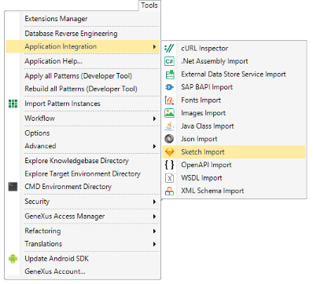
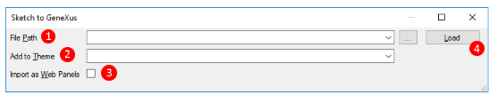
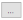
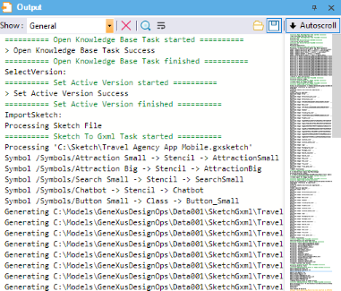
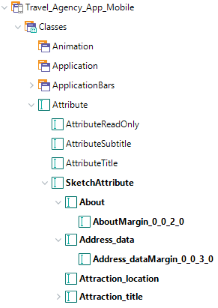
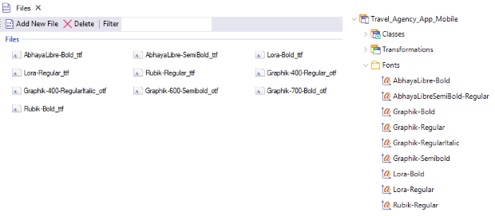

Sketch Import option (GeneXus 17 Upgrade 5 or prior)
The Sketch Import option allows you to create GeneXus objects from a user interface design made with the Sketch design toolkit. In order to achieve a good result, the designer must follow a set of designer rules.
Start the Sketch Import
From the GeneXus toolbar, go to:
Tools > Application Integration > Sketch Import.

Sketch to GeneXus initial dialog
Once the dialog is open, you will see the following options.

1. File path
It allows you to inspect in your file system the design file (.gxsketch or .sketch) you want to import by clicking on the  button.
2. Add to theme
By default, once you select a design file, it will suggest you create a new Theme object based on the file name you want to import. However, you can choose another new name or even select one of your current Theme objects in order to add the theme-classes inferred from the design.
3. Import as Web Panels
Check it if you want to import your design as Web Panels; otherwise, GeneXus will import them as Panels (mobile). If you import your design as mobile panels, it will also create a Menu object that you can use for navigating into every imported panel. Take into account that importing a Sketch design for mobile as Web Panels (or vice versa) may lead to an unexpected user interface.
4. Load option
This option will load a preview of the design file.
Sketch to GeneXus preview dialog
After you load a design file, GeneXus will show you a preview of what it is going to import. The dialog displays the information in two sections: on the left side, a tree structure of objects to be imported, and on the right side, it will load contextual information of what you select. Also, you can check (or uncheck) those objects that you want to import (or not) into your Knowledge Base.

1. Panels
For a Panel node, the dialog will display two tabs: 1) The Composition tab will show you a preview of the panel (when it is available) and a tree structure with every control in the layout, and 2) the Code tab will show you the GXML for the target panel (which includes the panel's events if there are actions on it). If the panel contains a grid with sample data, the import process will create the required Structured Data types and Data Providers under a "TestData" folder in your Knowledge Base.
2. Stencils
Similar to a Panel node. These objects will be created under a "Stencil" folder in your Knowledge Base.
3. Images
For an Image node, the dialog will display a preview of the image to be imported in the Composition tab.
4. Fonts
For a Font node, the dialog will display a preview of the font to be imported in the Composition tab.
5. Theme
The Theme node will display every theme-class (along with its hierarchy) to be imported. The tab Code will show you the properties to be set for each class in GXML format.
6. Colors
For every Color node, the dialog will show you a rectangle with the color itself, its name, and its hexadecimal value.
Import your design
Once you decide to import the design into your Knowledge Base, you simply click on the "OK" button and you can see the import progress on the Output Window (General view).

After the importing process has finished, you will see the new objects in the KB Explorer.

The Theme-object will have a set of classes prefixed with "Sketch" (or "ExternalDesign" as of GeneXus 16 upgrade 6) where every new theme-class inferred from the design file will inherit.
For example, for every Attribute inferred from the design file it will create a theme-class inheriting from the SketchAttribute theme-class.

Also, if custom Fonts were added, GeneXus will create its corresponding File object in the Knowledge Base, create the appropriate Font node in the Theme object, and set that Font in the appropriate theme-class.

Notes
- As of GeneXus 16 upgrade 6, by default, the import process will generate a DesignSystem-object. Check this FAQ section for further details.
See also